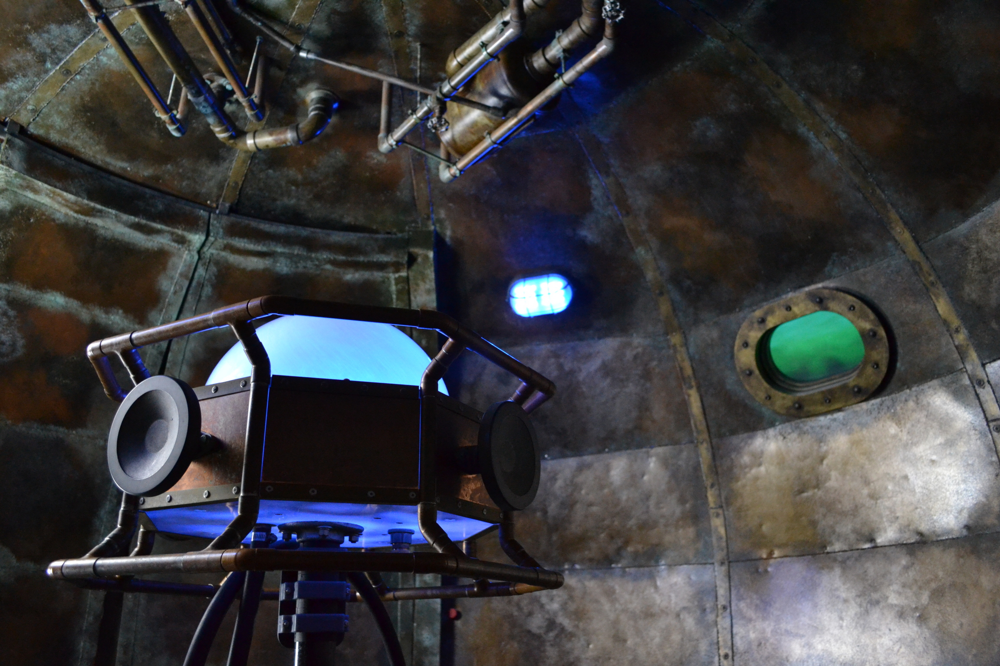

Backstory: This Is Fun
A career developing and operating new location-based entertainment concepts

Humble Beginnings
A Crummy Internship
In the summer of 1998, I had a terrible summer internship. It was the summer between my junior and senior year at MIT where I was studying Mechanical Engineering, and I was so pleased to have gotten a position at a “real” engineering firm for the first time. After selling cutlery for a summer and working in an underground lab at MIT that gave me a cough for a decade, it was time to try a real corporate product design job.
This company in Warwick, Rhode Island will remain nameless. But my job required sitting in a cubicle 40 hours a week, rarely talking to another human, designing detailed mechanical parts in 3D. Back in 1998 the computers were so slow at doing this that you literally had two workstations in your cubicle. You would fillet a curve in your model on one computer and then, while it took a few minutes to render that change, you roll your chair over to a separate computer where you could do email or whatever else while you waited for the software to catch up.
I was 20 years old and designing the rubber boots that protect a portable printer from a fall. Maybe you've picked up a rental car at an airport and a person printed a receipt for you right out in the parking garage… that printer clipped to their belt is covered with a rubber casing to protect it from a fall onto the concrete. Well, I may very well have designed that rubber boot. Rough summer. I decided this is not what I want to be doing for the rest of my life. There must be something more fun I can do with my education.
IAAPA Show 1998
A roommate in my fraternity house at MIT and I started looking at options and industries that were off the beaten path. Perhaps every mechanical engineering student at one point thinks about rollercoasters, and so we stumbled upon IAAPA – the International Association of Amusement Parks and Attractions.
IAAPA has a monster trade show each November, generally in Orlando (though in 1998 it was in Dallas, where my roommate was from – free room & board!) This tradeshow is the industry gathering place for anyone buying or selling to the attraction industry. Everyone from the plush you’d win at your county fair to the cotton candy machines to the consultants and designers who create the world’s largest and most exciting location-based entertainment (LBE) projects. There are rollercoasters and themed environments everywhere, over 1,000 companies make an appearance.
Back in ‘98 there was no concept of student admissions (or the current “Next Gen” program) so the organizers didn’t really know how to classify two 21-year old students. When we got our name badges to enter the show floor, they just said “BUYER” in bold letters. That worked out well. We could walk up to any of the booths, flash that buyer nameplate, and ask to talk to the highest ranking person there. When that person came over, I’d whip out a resume with a big M - I - T on the top, and ended up having a couple dozen mini-interviews in the span of a few days on the IAAPA show floor.
Both my roommate and I scored further interviews and eventually job offers from that show floor walk. One of the clearest tactical pieces of advice I offer when college students ask for advice: if you know an industry you are interested in, go to their tradeshow. Just about every niche field has an annual gathering – if you want to work in cars, go to the car show. There is a trade gathering for nearly every industry. You can make connections, land interviews, and importantly begin to really understand the big players and how your target industry really works.
Starting a career in Living Color
I landed an interview with a young, growing company called Living Color Enterprises, in Fort Lauderdale, FL. They flew me down for an interview in January 1999. The company was working out of a collection of garage bays – this was a scrappy startup, with expertise building custom aquariums (including the most realistic coral reef sculptures) and they were trying to get into large-scale themed environment fabrication. When it comes to themeparks, I love the environments, the immersion, the details, even more than the rollercoasters themselves – this was pretty exciting.
I sat for an interview with their head of engineering… who was not an engineer. During my interview, the head of the Living Color paint department burst in. She had to order paint for a giant sphere on a mardi gras float and had no idea how much paint to buy – how could anyone know the surface area of a big ball? (This was early days for the internet). “It’s 4*pi*r^2” I blurted out. They both looked at me. “How large is the ball?” I asked. “It’s about 8 feet in diameter.” I did some quick mental math: “You should be buying enough paint for about 200 square feet.” My interviewer looked at me and said “You knew that formula off the top of your head? I think you might have a job.”
I moved to Florida that June, after graduation. The toughest part was Beth. We’d had our first date on Valentine’s Day 1999, during our last semester of undergrad. I had already accepted the job at Living Color, and she was staying at MIT another year to get her masters in environment engineering. I didn’t know it at the time, but we were going to stay together, long distance, for over two years, on that foundation of 3 months together, before I would move back. But that’s later in our story.Disney’s Animal Kingdom Lodge
I moved into an apartment in Fort Lauderdale (soon to move to Pompano Beach) in June of 1999, and started work at Living Color. Initially, I worked on aquarium projects, developing an automated tool for calculating the required thickness of these massive slabs of acrylic for aquariums, and designing a couple interactives for a travelling museum exhibit called Extreme Deep, about deep sea exploration. But I was most excited about a project the company had just landed: the theming scope for Disney’s Animal Kingdom Lodge (DAKL), a 1,400 room premier hotel in Orlando.
I was given the role of Project Engineer on DAKL – essentially the grunt on the project, resolving design details and greasing the wheels. The Project Manager and Assistant Project Manager, above me, were leading the project and were to be bonuses based on the gross profit on the project. Except that shortly after I joined the team they realized: they had missed scope and severely underbid. There probably wasn’t going to be any gross profit on the project… and no bonuses. The Project Manager quit. A few days later, the Assistant PM quit.
The CEO walked into my office and essentially said (I paraphrase): “You’re a snotty-nosed kid who doesn’t know anything yet, but you know more about this project than anyone else. So I need you to get to Orlando tomorrow morning, buy steel-toed boots on your way there, and try not to make a fool of us.” When I walked into that construction trailer the next morning, surrounded by ~20 grizzly superintendents of various trades, the first fellow I met told me how he wanted his coffee… and I said “I’m not here to make your coffee, I’m here to run this meeting, take a seat.”
For the next two years, I got beat up. I was over my head… and learned a lot. We did an amazing job on that hotel, I still remember to the inch the dimensions of the lobby, and the design details of every column in the building. I hired 120 people (tripling the size of our team), got in the trenches, and through efficient design, hands-on site management, and thoughtful change-orders we were able to break-even on the project. As no one thought that was possible, the company owner/CEO gave me some credit. So when the day came that I told him I was giving six month’s notice before I went to business school, he said “what can we do to keep you?” I told him it wasn’t about money, I was going to school and the girl I wanted to marry was in Boston. He told me “OK, I can accept that, but when the time comes and you do your own thing, I want to be the first person you call…”
5 Wits, the beginning of Escape Rooms
I moved back north and started my MBA at Harvard Business School in 2001.
This Career Story is still being written
... in more ways than one!
Additional narrative still in progress…
LEVEL99
Nam sapien ante, varius in pulvinar vitae, rhoncus id massa. Donec varius ex in mauris ornare, eget euismod urna egestas. Etiam lacinia tempor ipsum, sodales porttitor justo. Aliquam dolor quam, semper in tortor eu, volutpat efficitur quam. Fusce nec fermentum nisl. Aenean erat diam, tempus aliquet erat.
Etiam iaculis nulla ipsum, et pharetra libero rhoncus ut. Phasellus rutrum cursus velit, eget condimentum nunc blandit vel. In at pulvinar lectus. Morbi diam ante, vulputate et imperdiet eget, fermentum non dolor. Ut eleifend sagittis tincidunt. Sed viverra commodo mi, ac rhoncus justo. Duis neque ligula, elementum ut enim vel, posuere finibus justo. Vivamus facilisis maximus nibh quis pulvinar. Quisque hendrerit in ipsum id tellus facilisis fermentum. Proin mauris dui, at vestibulum sit amet, auctor bibendum neque.